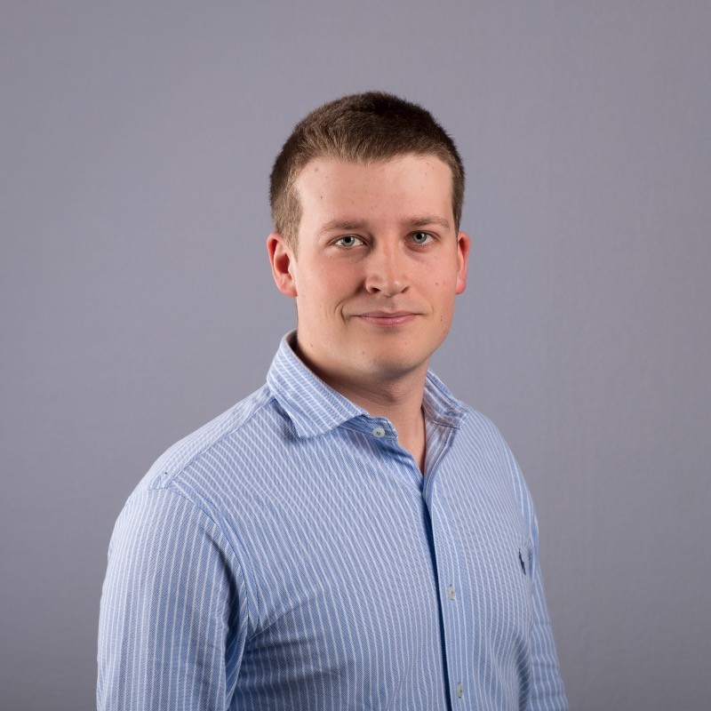

About Me

Academic Journey
MSc student in Computer Science at ETH Zürich specialising in AI and privacy‑preserving systems. Previously completed a BSc at Saarland University (Honors, top 5 %) and studied abroad at the University of Washington.
Interests
Passionate about privacy‑preserving machine learning, cryptography and AI applications. I enjoy exploring new ideas at the intersection of theory and practice.
Skills
Strong programming background in Python, Java, C/C++ and LaTeX, with solid foundations in algorithms, statistics and security. I enjoy teaching and making complex topics accessible.